Introduction
Storm drain inlets are structures that convey runoff from street pavements into below ground storm sewers. Inlet type, sizing and spacing are normally chosen to meet limits on the spread and depth of water across roadways as set by local drainage agencies to maintain public safety. This tutorial demonstrates how SWMM can be used to model street drainage using inlets.
 |  |
To analyze street drainage with SWMM a site is represented as a dual drainage system consisting of both street conduits along the ground surface and sewer conduits below it. An inlet structure will divert some portion of the street flow it sees into a designated node of the sewer system with the rest being bypassed to downstream streets. When an inlet's sewer node reaches its full depth any excess flow that would cause it to flood is sent back through the inlet and into the street.
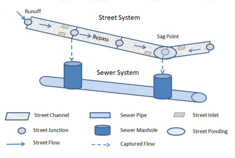
To view the rest of this tutorial use the button to move to the next topic, the button to retunr to the previous topic, and the button to return to the start of the tutorial.
[!note] This tutorial assumes you are familiar with the basics of using the SWMM 5 user interface to develop a simple drainage system. If need be, please consult the SWMM 5 Basic Tutorial before proceeding further.
Inlet Types
SWMM supports the following types of inlets whose flow capture efficiency is computed using the methods described in the U.S. Federal Highway Administration Urban Drainage Design Manual (HEC-22).
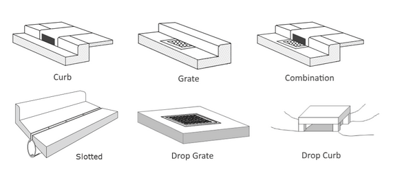
| An additional Custom type of inlet is also available. Its capture efficiency is described by either a user-supplied Diversion curve (captured flow v. approach flow) or Rating curve (captured flow v. flow depth). | 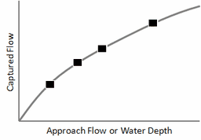 |
Inlet Concepts
Some key concepts to keep in mind when modeling inlets with SWMM are:
- Inlet objects are assigned to conduit links that represent streets or open channels.
- Because of the methods used to compute inlet flow capture:
- Curb and gutter type inlets can only be used in conduits with a designated Street cross-section.
- Drop inlets can only be used in conduits with a rectangular or trapezoidal cross-section.
- Custom inlets can be placed in any type of conduit.
- Each inlet is assigned a node (typically belonging to a sewer line) that receives the flow captured by the inlet.
- Multiple inlets of the same design and receptor node can be assigned to a conduit (as pairs for two-sided streets). For on-grade placement the flow captured by each inlet is determined sequentially, so that the approach flow to the next inlet in line is the bypass flow from the inlet before it.
- Users can stipulate whether an inlet operates on-grade, on-sag or have SWMM decide based on street layout and topography. On-grade means the inlet is located on a continuous grade. On-sag means the inlet is located at a sag or sump point where all adjacent conduits slope towards the inlet leaving no place for water to flow except into the inlet.
- Flow capture for on-grade inlets is a function of the approach flow seen by the inlet while for on-sag inlets it is a function of the depth of water at the sag point node.
- Inlets can also have a degree of clogging and a flow capture restriction assigned to them.
Inlet Analysis Workflow
In general, running an inlet analysis with SWMM entails the following steps:
- Layout both the street and sewer networks.
- Assign subcatchment runoff and user-defined inflows to individual street nodes.
- Create a collection of Street cross-sections.
- Assign specific Street cross-sections to individual street conduits.
- Create a collection of Inlet designs.
- Assign specific Inlet designs to selected streets.
- Set appropriate analysis options and run a simulation.
- Review the simulation results to see if flow spread and depth values are acceptable.
These steps will now be applied to a simple street and sewer drainage system.
Example Project
A simple example will be used to illustrate how street drainage analysis is made with SWMM. The project's layout is shown below with the node and link ID names displayed.
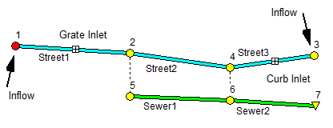
It contains three street segments with inlets placed in two of them. These divert captured flow into a two-pipe sewer line. External runoff inflows are applied at each end of the street system. Node 4 represents a sag (low elevation) point where any street flow not captured by the inlets will cause water to pond atop the street. Each street is two-sided with each side 20 feet wide with a cross slope of 2%, a 6-inch high curb and a roughness coefficient of 0.016. Each sewer pipe is circular with a 1-foot diameter and 0.01 roughness. The streets and sewers each have a 1% slope and are 200 feet long. Street1 contains a 2 ft x 2 ft grate inlet on each side while a 2 ft long by 6 inches high curb opening is located on each side of Street 3.
We wish to determine the maximum spread and depth of water on the streets when both inflows are from a triangular 6-hour hydrograph with peak flow of 0.6 cfs at 3 hours.
Step 1 - Lay Out the Network
The first step is to draw the nodes and links that comprise the drainage network using SWMM's visual editing tools. The layout of both the streets and sewer line is shown below with the invert elevation of each node displayed below it.
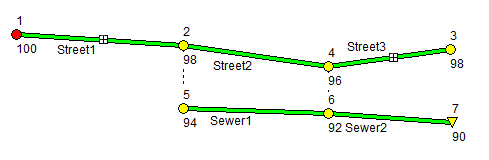
Next edit each node's properties, giving it the ID name and invert elevation shown on the diagram. Sewer nodes 5 and 6 have their maximum depths set to 4 feet. Then edit each link, giving it the ID name shown on the diagram and setting its length to 200 feet. For Sewer1 and Sewer2 set their diameters to 1 foot and their roughness to 0.01. At this point there is no need to edit additional street properties - this will be done subsequently.
[!note] There is no need to explicitly connect sewer nodes to street nodes with a physical link – SWMM's Inlet object will create a virtual connection between the two systems. There is also no requirement that the rim elevation of sewer nodes match either the invert or top elevation of inlet street nodes.
Step 2 - Add External Inflows
A street drainage system will typically receive inflows from computed subcatchment runoff or from user-defined time series. These inflows need to be assigned to their respective locations within the street layout. For subcatchment runoff this involves setting the subcatchment's Outlet property to the appropriate street node ID. For user-defined inflows, a user-supplied flow time series is assigned directly to the desired node's Inflows property. In addition, the sewer sub-system may have direct inflows associated with its nodes, such as from Rainfall Dependent Inflow/Infiltration (RDII) or sanitary flows (for combined sewer systems).
Our example project does not include subcatchment areas with their associated rainfall/runoff hydrology nor any direct sewer inflow. Instead it uses an external inflow time series assigned to street nodes 1 and 3. To do this, first create a Time Series object named TS1 with the following data:
| Hour | 0 | 1 | 2 | 3 | 4 | 5 | 6 |
| Flow (cfs) | 0 | 0.2 | 0.4 | 0.6 | 0.4 | 0.2 | 0 |
Then edit the Inflows property of nodes 1 and 3, assigning TS1 as a Direct Flow inflow for each.
Step 3 - Create Street Cross-Sections
We next specify the cross-section shape and roughness of our street conduits. SWMM includes a special Street cross-section object that is consistent with the shape used by the HEC-22 inlet procedures. Similar to the way that Transects are used with irregular channels, a collection of Street cross-sections can be created to be re-used across multiple streets.
Our example project utilizes the same cross-section for all of its streets. To create it:
- Select the Streets category from the Project Browser.
- Click the
 button to bring up The Street Section Editor.
button to bring up The Street Section Editor. - Enter the ID name and dimensions shown in the screen shot below.

These dimensions refer to one half of the street, from its crown to its curb (or backing if present). Because our streets are two-sided, the same dimensions apply to both halves.
Step 4 - Assign Street Cross-Sections
Now that we have defined the dimensions and roughness of a Street cross-section we can apply it to the streets in our model. To do so:
- Select Street1 and open its Property Editor.
- Select the Shape field and click the ellipsis button (or simply press the Enter key).
- In the Cross-Section Editor that appears, select the Street shape.
- In the Street Section Name combo box, select our only available street cross-section named StreetSect1.
- Repeat these steps for Street2 and Street3.

[!note] If a number of street conduits are clustered or linked together and share the same cross-section then instead of setting their Shape property one at a time SWMM's group editing feature can be used to assign them the desired cross-section all at once.
Step 5 - Create Inlet Designs
Next we create a set of inlet designs that can be deployed to the streets in our project:
- Select the Inlets category from the Project Browser.
- Click the button to create a new inlet design.
- Fill In the fields of the Inlet Structure Editor that appears with the design of a grated inlet as shown below:
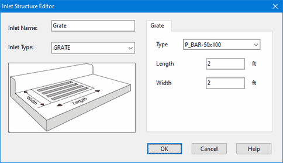
- After accepting the contents of the Inlet Structure Editor, repeat Steps 2 and 3 again to add a curb opening inlet as shown below:

Step 6 - Assign Inlet Designs
At this point we can assign inlets to our project's streets. The general steps for doing this are:
- Select the street conduit in which to place an inlet and bring up its Property Editor.
- Select the Inlets property and click the ellipsis button (or press Enter).
- In the Inlet Usage Editor that appears select a previously created Inlet Structure to use from the dropdown list.
- Then select the Capture Node property and enter the name of the node that receives the inlet's captured flow (or simply click the node on the Study Area Map).
- Enter values for the other optional usage properties as needed (consult the Inlet Usage Editor topic in SWMM's main Help file to learn more about these).
This process is depicted visually in the screen shot below.

For our project we want to place the Grate inlet in Street1 with node 5 as its capture node and the CurbOpening inlet in Street3 with node 6 as its capture node.
Step 7 - Run a Simulation
The design of our street drainage system is now complete and ready to be simulated. Before doing so we need to set some analysis options.
- Open the Simulation Options dialog (select the Options category from the Project browser, select the General Options entry and click the
 [edit] button).
[edit] button). - On the General page set the Routing Model choice to Dynamic Wave.
- On the Dates page set the End Analysis time to 8 hours.
- On the Time Steps page set the Reporting Step to 5 minutes and the Routing Step to 10 seconds.
Now run a simulation by clicking the  button on the main toolbar or by selecting Project | Run Simulation from the main menu.
button on the main toolbar or by selecting Project | Run Simulation from the main menu.
Step 8 - View Simulation Results
The results of our drainage system analysis can be viewed in several ways:
- Checking the Street Summary Report table for acceptable flow spread and depth.
- Creating time series plots of inlet flow capture.
- Viewing a profile plot of flow depth along a series of streets.
Each of these will be illustrated next.
Street Summary Report
The Street Summary Report for our project can be viewed by selecting Report | Summary from SWMM's main menu and then selecting the Street Flow topic. The report is shown below.
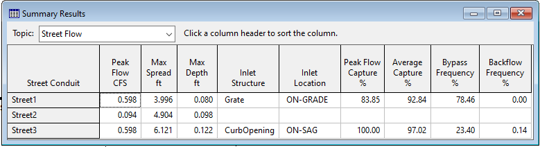
Aside from showing the maximum flow, spread, and depth of water on each street, it also lists some flow capture statistics for each inlet as well as its backflow frequency (the percent of the time that the inlet's sewer node overflowed). If this analysis were for a minor storm event where water encroachment was not allowed to exceed one lane of roadway (10 feet for our streets), then this design would be acceptable.
Flow Capture Time Series
The flow captured by a project's inlets shows up as lateral inflow into the inlet's capture node. Lateral inflow is one of the computed output variables that can be viewed using SWMM's reporting features. Below is a time series plot of the approach flow seen by the Grate inlet in Street1 as well as the amount of this flow that is captured (i.e., the lateral inflow into node 5):
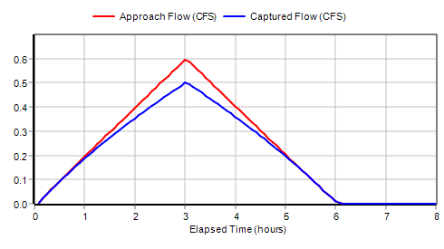
We see that at low flows the inlet's capture efficiency is 100% while at the peak flow it is 84% which matches the number appearing on the Street Summary report.
Flow capture for the on-sag curb opening inlet depends on the water depth at the sag point node 4. A scatter plot for these two variables (again noting that the lateral inflow to node 6 reflects the inlet's captured flow) looks as follows:
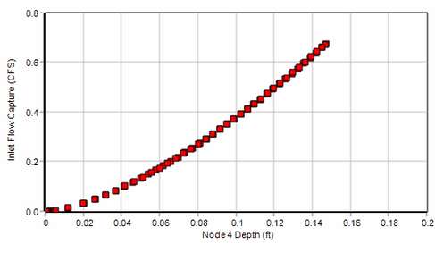
The shape of this curve is indicative of weir flow through the inlet which is what HEC-22 uses for flow depths below the height of the curb opening.
Flow Depth Profile Plot
Another interesting way to view inlet analysis results is with a profile plot, especially for the sag point at street node 4. Such a plot, for the time of peak flow, is shown below. The partial flow capture of the CurbOpening inlet at node 4 is causing the excess water to back up along Street2 and Street3 as shown by the adverse profiles along these streets.
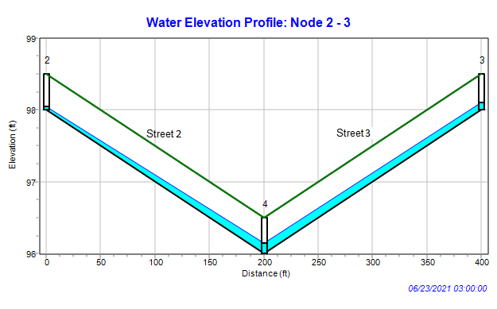
Additional Analyses
Some additional analyses can be made with our example drainage system to illustrate the following:
- the effect that depressed gutters have on inlet performance
- street flooding caused by surcharged sewers
- using kinematic wave routing to analyze street drainage.
Before continuing you should save the original example project to disk since it will be modified as each of these items is analyzed.
Depressed Gutters
| Depressed gutters can increase inlet capture (due to higher cross slope) and reduce pavement spread (due to the increased volume next to the curb). We will illustrate this effect by adding a depressed gutter to the streets in our example project. We do this by editing the StreetSect1 cross section, giving it a 0.167 foot (2 inch) gutter depression that is 2 feet wide (refer to Step 3 of the project's workflow on how to access the Street Section Editor). |
After making this change and re-running the analysis we can compare depressed gutter results to those with no depressed gutter:

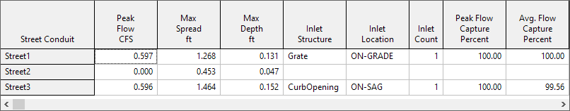
Gutter depression has significantly reduced the amount of spread seen by Street2 and Street3. It has also allowed the Grate inlet to completely capture all of the flow in Street1. (Even though Street2 sees no flow from Street1 it still contains some water backed up from the sag node at its downstream end.)
Sewer Backflow
When a portion of the sewer system becomes surcharged there is the possibility that flows will be high enough to overflow an inlet's sewer receptor node. When this happens SWMM computes the inlet's net flow capture as the difference between the normal flow capture and the sewer overflow. If this net flow is negative it results in water flowing out of the sewer node into the inlet's street node.
Our original example drainage system can be modified as follows to illustrate this effect:
- Add a new sewer pipe, Sewer0, upstream of Sewer1 with its same properties and give its start node an elevation of 98 feet and a maximum depth of 4 feet.
- Add an inflow to the start node of Sewer0 with the same time series as the street inflows but with a scale factor of 3.
- Reduce the diameter of Sewer1 to 0.5 feet.
- Run the analysis.
These changes cause Sewer1 to reach its flow capacity when system inflow is high enough thus producing an overflow at its upstream node 5. This node receives street flow captured by the Grate inlet in Street1. When the sewer overflow exceeds the captured street flow there is a net addition of flow back onto the street. This behavior is reflected in the following time series graph:

And here is what the conduit flows and lateral flow exchanges look like at the time of peak system inflow (flow values are shown for links and lateral inflow values are shown next to nodes):

Although the Grate inlet in Street1 captures 0.5 cfs of street flow, the overflow from its sewer node 5 is large enough to create a net backflow through the inlet of 0.7 cfs. This results in Street2 seeing an increase in flow instead of having its flow reduced by the amount captured by the Grate inlet.
Kinematic Wave Routing
All of our previous analyses have been run using SWMM's dynamic wave flow routing option. It is also possible to analyze inlet performance using kinematic wave routing. However, kinematic wave routing is unable to create a backwater effect for excess water that remains on the street at a sag node after its inflow has passed through an inlet. Instead, since the junction node has no outlet conduits, it is treated as if it were an outfall node and any excess water is simply lost from the system (i.e., listed as external outflow in the flow balance appearing in the project's Status Report). This will produce a much different result for the sag point than that obtained using dynamic wave analysis. You can verify this by running the original example project under kinematic wave and comparing its Street Summary report with the one found using dynamic wave analysis.
This issue can be resolved by replacing sag junction nodes with storage nodes whose maximum depth equals the street's curb height and whose surface area equals the spread (i.e., top width) at a given height times half the length of all of the streets converging on the node. The latter can be expressed with the equation:
\[ A = \( \sum \frac{N_{s} L}{2 S_{x}} \) y \]
where the summation is made over all streets that converge on the node in question with \(A\) = storage surface area, \(N_{s}\) = 1 for a one-sided street or 2 for a two-sided street, \(L\) = street length, \(S_{x}\) = street cross slope and \(y\) = storage depth.
To apply this modification to our original example project:
- Right-click on node 4 and select Convert To | Storage Unit from the pop-up menu that appears
- Bring up the storage unit's Property Editor and set its Max. Depth to 0.5
- Select the Storage Shape property and click the ellipsis button (or hit Enter)
- In the Storage Shape Editor that appears select the Functional shape option and set a0 = 0, a1 = 20000 and a2 = 1. (The value of 20000 is derived from having two converging streets, both two-sided with a length of 200 and a cross slope of 0.02).
- Run the analysis under kinematic wave.
The resulting Street Summary report, shown below, looks very similar to the one found under dynamic wave.
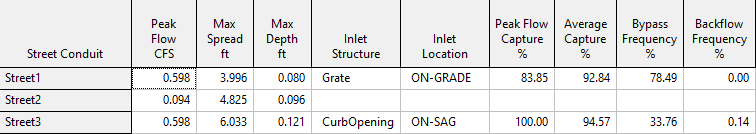
Computational Methods
SWMM employs a simple lateral flow adjustment method to exchange street inlet captured flow and sewer overflow between the two sub-systems as diagrammed below.
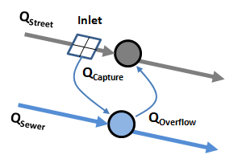
When implementing this approach the following actions are taken at each flow routing time step:
- The flow captured at each inlet is computed using current values of street flow rates and flow depths.
- Each inlet’s captured flow is added to the lateral inflow[^1] that enters the inlet’s assigned sewer node and is subtracted from the lateral inflow seen by the downstream node of the inlet’s street conduit.
- Any current overflow (i.e., flooding) that an inlet’s sewer node experiences is added onto the lateral inflow for the inlet’s street node instead of having it leave the system as it normally would. This allows for a two-way flow exchange between the street and sewer once the water level in the sewer node reaches the ground elevation.
- The usual flow routing step normally taken by SWMM is then applied to update system hydraulics to the next point in time.
By convention, two-sided Street conduits have pairs of identical inlets placed on each side. Inlet flow capture is computed for only one side of the street using half of the street's current flow and is then doubled to determine how much total flow is diverted to the street's sewer node.
The next set of topics describe the methods used for computing flow capture for the different types of inlets.
[1] Lateral inflow refers to flow that a node receives from external sources (such as surface runoff, groundwater, rainfall dependent inflow/infiltration, user-supplied values, etc.) and can be either positive for inflow or negative for outflow.
Curb and Gutter Inlets
Curb and gutter inlets (grates, curb openings, and slotted inlets) have their flow capture computed using the methods described in the Federal Highway Administration's Urban Drainage Design Manual, otherwise known as HEC-22. As these methods assume a triangular street cross-section (see below), curb and gutter inlets can only be placed in conduits that are assigned SWMM's Street cross-section shape.

The specific equations HEC-22 uses to compute flow capture depend on whether the inlet is located on a continuous sloping grade or at a sag (or sump) point.
On-Grade Capture
Grate Inlets
Flow capture for grated inlets located on-grade is computed as follows:
\[ Q_{c} = Q \{R_{f} E_{o} + R_{s} (1 - E_{o}) \} \]
\[ R_{f} = 1 - 0.09 max(0, V - V_{o}) \]
\[ R_{s} = 1 / (1 + 0.15 V^{1.8} / S_{x} L^{2.3} ) \]
where:
| \(Q_{c}\) | = captured flow (cfs) |
| \(Q\) | = approach flow (cfs) |
| \(E_{o}\) | = ratio of flow over grate to total flow (depends on grate width) |
| \(R_{f}\) | = frontal capture efficiency |
| \(R_{s}\) | = side capture efficiency |
| \(V\) | = velocity of flow over the grate (ft/s) |
| \(V_{o}\) | = velocity at which water begins to splash over the inlet (depends on grate length) (ft/s) |
| \(S_{x}\) | = street cross slope (ft/ft) |
| \(L\) | = grate length (ft) |
More information on determining values for \(E_{o}\) and \(V_{o}\) can be found in the HEC-22 Manual.
Curb Opening Inlets
Flow capture for curb opening inlets placed on-grade is computed as follows:
\[ Qc = Q \{1 - (1 - min(1, L/L_{T}))^{1.8} \} \]
\[ L_{T} = 0.6 Q ^{0.42} S_{L}^{0.3} (n S_{e})^{-0.6} \]
\[ S_{e} = S_{x} + (a / W) E_o \]
where:
| \(L\) | = length of curb opening (ft) |
| \(L_{T}\) | = length at which full capture is achieved (ft) |
| \(S_{L}\) | = longitudinal street slope (ft/ft) |
| \(n\) | = Manning's roughness coefficient for the street surface |
| \(a\) | = curb depression (ft) |
| \(W\) | = depressed gutter width (ft) |
| \(E_{o}\) | = ratio of flow over depressed gutter width to total flow |
and \(a\), \(W\) and \(E_{o}\) only apply to composite street sections with depressed gutters.
Combination Inlets
A combination inlet consists of both a grate and curb opening placed together at the same location. Its on-grade flow capture equals that of the grate plus any flow captured by the portion of the curb opening that extends upstream of the grate's length. The latter flow capture is computed first and is subracted from the approach flow used to determine the grate's flow capture.
Slotted Inlets
The flow capture capability of a slotted inlet located on-grade is the same as that of a curb opening inlet of equal length.
On-Sag Capture
Flow capture efficiency for an inlet in a sag location depends on the size of the inlet’s opening and the depth of water that collects next to it at the street curb. At low flow depths the inlet acts as a weir with
\[ Q_{C} = C_{W} L_{W} d^{1.5} \]
while at higher depths it acts as an orifice with
\[ Q_{C} = C_{O} A_{O} \sqrt{2 g d} \]
where:
| \(Q_{C}\) | = captured flow (cfs) |
| \(C_{W}\) | = weir coefficient (ft0.5/sec) |
| \(C_{O}\) | = orifice coefficient |
| \(g\) | = acceleration of gravity (ft/sec2) |
| \(L_{W}\) | = effective length of inlet (ft) |
| \(A_{O}\) | = open area of inlet (ft2) |
| \(d\) | = effective depth of water seen by the inlet (ft) |
The values of \(C_{W}\) and \(C_{O}\) depend on the type of inlet (grate, curb opening, or slotted inlet).
Grates
For grate inlets the following values are used in the flow capture equations:
| \(C_{W}\) | = \(3.0\) |
| \(C_{O}\) | = \(0.67\) |
| \(L_{W}\) | = \(L + 2W\) |
| \(d\) | = \(d_{i} + (W/2) S_{W}\) |
where \(W\) is the grate's width, \(L\) its length, \(S_{W}\) the gutter slope, and \(d_{i}\) the depth of water at the street's curb. It is assumed that the depth at which weir flow becomes orifice flow is the depth at which the two flows are the same. This results in weir flow for depths \(d\) below \(1.79 A_{O} / L_{W}\) and orifice flow for depths above it.
Curb Openings
For curb opening inlets the following values are used in the flow capture equations:
| \(C_{W}\) | = \(3.0\) for uniform cross slope or \(L > 12\) ft |
| = \(2.3\) otherwise | |
| \(C_{O}\) | = \(0.67\) |
| \(L_{W}\) | = \(L\) for uniform cross slope or \(L > 12\) ft |
| = \(L + 2W\) otherwise | |
| \(d\) | = \(d_{i} - (h/2) \sin{\theta}\) |
where \(L\) is the length of the curb opening, \(h\) its height, \(W\) the width of a depressed gutter, \(\theta\) the angle that the inlet's throat makes with the vertical (0 degrees for a vertical throat, 90 degrees for a horizontal throat), and \(d_{i}\) is the depth of water at the curb.
Weir flow occurs at effective depths below h while orifice flow occurs at depths greater than \(1.4h\). For depths in between these flow capture is linearly interpolated between the flow capture at these two depths.
Slotted Inlets
For slotted inlets the variables in the flow capture equations are:
| \(C_{W}\) | = \(2.48\) |
| \(C_{O}\) | = \(0.8\) |
| \(L_{W}\) | = \(L\) |
| \(d\) | = \(d_{i}\) |
where L is the inlet length. Weir flow holds for \(d = 0.2\) feet while orifice flow occurs for \(d = 0.4\) feet. In between these depths flow capture is linearly interpolated between the flow capture at these two depths.
Drop Inlets
Drop Grate Inlets
The flow capture equation for a drop grate inlet located on-grade in a channel is the same as for a street grate except that the ratio EO of flow over the grate to total cross-section flow Q is given by:
\[ E_{O} = \frac{1.486 \sqrt{S_{L}} (y W)^{1.67}}{n Q (W + 2 y)^{0.67}} \]
where
| \(W\) | = side length of grate parallel to flow direction (ft) |
| \(y\) | = flow depth in the channel (ft) |
| \(n\) | = Manning's roughness coefficient for the channel |
| \(S_{L}\) | = channel longitudinal slope (ft/ft) |
A cross slope \(S_{X}\) of 1% is assumed unless the grate extends across the entire bottom width of a trapezoidal channel. In that case \(S_{X}\) is taken as the slope of the channel
Custom Inlets
Custom inlets, which can be used with any type of conduit, are described with either a Diversion curve of captured flow as a function of approach flow, or with a Rating curve of captured flow as a function of water depth. The curves are input to SWMM in the form of tables of selected points on each type of curve. During a simulation, linear interpolation is used to find values in between the tabulated points.
The following conventions apply for using the curves:
- If a Rating curve is supplied for inlet, then the water depth at the conduit's downstream node is used to determine flow capture even if the inlet is located on-grade.
- If a Diversion curve is supplied for an on-sag inlet, then its flow capture is computed using the conduit's flow rate even if the inlet is located on-sag.